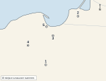
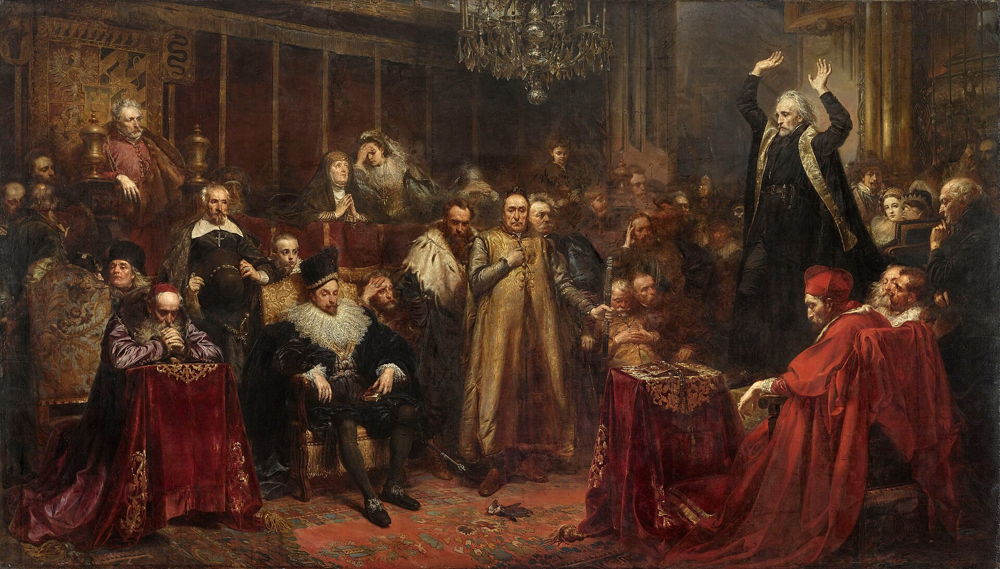

KOD UCZNIA:
Materiał autorski do ćwiczeń, opracowany na podstawie regulaminu szczegółowego oraz archiwalnych arkuszy etapu szkolnego Kujawsko-Pomorskiego Kuratora Oświaty z lat 2018/2019–2025/2026. Nie jest oficjalnym arkuszem konkursowym.
Dopasuj nazwę do opisu. Wpisz litery A–F. Jedna odpowiedź jest zbędna.
| 1. Mykeński gród na Peloponezie otoczony potężnymi „cyklopimi murami”, zbadany przez Heinricha Schliemanna. | |
| 2. Mityczny potwór o ciele człowieka i głowie byka, zamknięty na Krecie w labiryncie. | |
| 3. Największy pałac na Krecie, odkopany przez Arthura Evansa na przełomie XIX i XX w. | |
| 4. Malowidło zdobiące ściany pałaców, np. przedstawiające akrobatyczne skoki przez byka. | |
| 5. Sylabiczne pismo Greków mykeńskich, odczytane w 1952 r. przez Michaela Ventrisa. |
Uzupełnij tekst. W każdą lukę wpisz właściwe określenie.
Największe państwo starożytnego Bliskiego Wschodu stworzyła dynastia (1), którą zapoczątkował Cyrus Wielki. Państwo podzielone było na prowincje zwane (2), zarządzane przez namiestników. Stolicą ceremonialną było miasto (3), spalone w 330 r. p.n.e. przez wojska Aleksandra Wielkiego. Sprawną łączność w rozległym państwie zapewniała licząca ok. 2500 km (4), łącząca Suzę z Sardes. Największy zasięg terytorialny osiągnęło państwo za panowania króla (5), którego następca w 480 r. p.n.e. poprowadził przeciw Grecji jeszcze większą, lecz nieudaną wyprawę. Głównym bóstwem czczonym przez Persów według nauki proroka Zaratustry był (6).
Dopasuj postać do opisu. Wpisz litery A–F. Jedna odpowiedź jest zbędna.
| 1. Filozof, który głosił istnienie niewidzialnego świata idei i założył w Atenach szkołę zwaną Akademią. | |
| 2. Filozof i matematyk, którego imieniem nazwano twierdzenie o bokach trójkąta prostokątnego, założyciel bractwa w Krotonie. | |
| 3. Filozof skazany na śmierć przez wypicie cykuty za „psucie” ateńskiej młodzieży, znany z metody zadawania pytań. | |
| 4. Filozof z Abdery, twórca teorii, według której świat zbudowany jest z niepodzielnych cząstek. | |
| 5. Nauczyciel Aleksandra Wielkiego, autor traktatów z logiki, przyrody i polityki, założyciel Liceum w Atenach. |
W zadaniach 1–6 zaznacz albo wpisz literę jednej poprawnej odpowiedzi.
| 1. Bitwa pod Akcjum (31 r. p.n.e.) była starciem floty Oktawiana z flotą: A. Marka Antoniusza i Kleopatry B. Hannibala C. Spartakusa D. Wercyngetoryksa |
|
| 2. Po zwycięstwie pod Akcjum senat rzymski nadał Oktawianowi tytuł: A. cesarz B. dyktator C. August D. konsul | |
| 3. Ustrój wprowadzony przez Oktawiana, pozornie zachowujący instytucje republikańskie, nazywamy: A. dominat B. pryncypat C. tetrarchia D. senioralizm | |
| 4. Rywal Oktawiana pokonany pod Akcjum, rzymski wódz związany z Kleopatrą, to: A. Pompejusz B. Krassus C. Lepidus D. Marek Antoniusz | |
| 5. Bitwa pod Akcjum została stoczona u wybrzeży: A. Grecji B. Egiptu C. Hiszpanii D. Sycylii | |
| 6. Rok 31 p.n.e. uznaje się umownie za koniec: A. wojen punickich B. panowania Juliusza Cezara C. republiki rzymskiej D. cesarstwa zachodniorzymskiego |
Przeczytaj tekst i oceń prawdziwość zdań. Wpisz P (prawda) albo F (fałsz).
„Żaden wolny człowiek nie będzie pojmany ani uwięziony, wywłaszczony, wyjęty spod prawa lub wygnany [...] inaczej niż na mocy legalnego wyroku równych mu (par) albo na podstawie prawa kraju.”
Wielka Karta Swobód, 1215 r. (fragment artykułu 39, tłumaczenie przybliżone).
| 1. Wielką Kartę Swobód wymusili na królu Janie bez Ziemi możni i rycerstwo angielskie w 1215 r. | |
| 2. Karta chroniła przede wszystkim prawa chłopów pańszczyźnianych. | |
| 3. Zgodnie z zacytowanym fragmentem, wolnego człowieka można było uwięzić wyłącznie na mocy wyroku równych mu albo na podstawie prawa kraju. | |
| 4. Karta wprowadzała zasadę, że król mógł swobodnie nakładać nowe podatki bez zgody rady możnych. | |
| 5. Zasady Wielkiej Karty Swobód uznaje się za jeden z pierwszych kroków w rozwoju monarchii ograniczonej prawem w Europie. |
W zadaniach 1–5 zaznacz albo wpisz literę jednej poprawnej odpowiedzi.
| 1. Chwalebna rewolucja z 1688 r. doprowadziła do obalenia króla: A. Karola I B. Jakuba II C. Karola II D. Wilhelma Orańskiego |
|
| 2. Nowym władcą Anglii został wspólnie z żoną: A. Wilhelm Orański i Maria B. Jakub II C. Karol II D. Oliver Cromwell | |
| 3. Rewolucję nazwano „chwalebną”, ponieważ: A. zakończyła się wojną domową B. przywróciła absolutną władzę króla C. odbyła się niemal bez rozlewu krwi D. obaliła parlament | |
| 4. W 1689 r. parlament angielski uchwalił dokument ograniczający władzę króla, zwany: A. Wielką Kartą Swobód B. Aktem Nawigacyjnym C. Aktem Supremacji D. Kartą Praw (Bill of Rights) | |
| 5. Wydarzenia 1688–1689 r. w Anglii uznaje się za ważny krok w rozwoju ustroju: A. monarchii absolutnej B. republiki C. demokracji bezpośredniej D. monarchii parlamentarnej |
Dopasuj postać do opisu. Wpisz litery A–G. Jedna odpowiedź jest zbędna.
| 1. Pisarz i filozof, krytyk Kościoła i nietolerancji religijnej, autor powiastki filozoficznej „Kandyd”. | |
| 2. Szkocki ekonomista, autor dzieła „Bogactwo narodów” (1776), uznawany za twórcę klasycznej ekonomii. | |
| 3. Autor dzieła „O duchu praw” (1748), propagator zasady trójpodziału władzy na ustawodawczą, wykonawczą i sądowniczą. | |
| 4. Niemiecki filozof, autor definicji oświecenia jako „wyjścia człowieka z niepełnoletności, w którą popadł z własnej winy”. | |
| 5. Autor traktatu „Umowa społeczna” (1762), głosił ideę suwerenności ludu i wspólnej woli powszechnej. | |
| 6. Redaktor naczelny wielkiej Encyklopedii francuskiej, wydawanej od 1751 r., zbierającej wiedzę epoki. |
Uzupełnij tekst. W każdą lukę wpisz właściwe określenie.
Jeden z najstarszych spisanych zbiorów praw stworzył w XVIII w. p.n.e. władca Babilonu (1). Tekst kodeksu wyryto na kamiennej płycie zwanej (2). Kodeks opierał się na zasadzie odwetu, wyrażanej formułą (3) („oko za oko”). Surowość kar zależała od pozycji społecznej sprawcy i ofiary — najsurowiej karano czyny wobec przedstawicieli (4). Kodeks regulował też sprawy gospodarcze, np. wysokość odsetek od pożyczek udzielanych w (5) — kruszcu używanym w Mezopotamii jako miernik wartości.
Oceń prawdziwość zdań. Wpisz P (prawda) albo F (fałsz).
| 1. Wielka schizma z 1054 r. doprowadziła do trwałego podziału chrześcijaństwa na Kościół katolicki i prawosławny. | |
| 2. Bezpośrednią przyczyną schizmy był spór między papieżem a patriarchą Konstantynopola, zakończony wzajemną ekskomuniką. | |
| 3. Językiem liturgicznym Kościoła wschodniego pozostawała wyłącznie łacina. | |
| 4. Po schizmie zwierzchnikiem Kościoła prawosławnego pozostał nadal papież rzymski. | |
| 5. Schizma z 1054 r. miała wpływ na późniejsze stosunki między łacińskim Zachodem a bizantyjskim Wschodem, w tym na wyprawy krzyżowe. |
Na mapie oznaczono pięć miast. Do każdego opisu dopisz właściwy numer 1–5.

Mapa bazowa: SimpleMapLab na podstawie danych Natural Earth 1:50 mln, domena publiczna (CC0); oznaczenia i opracowanie zadania: własne. Cienka jasna linia to współczesna granica państwowa, naniesiona wyłącznie dla ułatwienia orientacji.
| A. Siedziba wielkiego mistrza zakonu krzyżackiego, zdobyta przez wojska polskie i zaciężnych w 1457 r. | |
| B. Największy port Prus Królewskich, którego mieszczanie w znacznej mierze finansowali wojnę przeciw zakonowi. | |
| C. Miasto, w którym w lutym 1454 r. mieszczanie i szlachta wypowiedzieli posłuszeństwo zakonowi, a w 1466 r. podpisano pokój kończący wojnę. | |
| D. Miejsce klęski polskiego pospolitego ruszenia we wrześniu 1454 r. | |
| E. Miasto, do którego po wojnie przeniesiono stolicę okrojonego państwa zakonnego, odtąd lenna Polski. |
F. Podaj rok zawarcia pokoju, który zakończył wojnę trzynastoletnią i przyłączył do Polski Pomorze Gdańskie.
Wykonaj polecenia 1–3.
1. Podaj rok koronacji Przemysła II na króla Polski, która przywróciła jedność tytułu królewskiego po latach rozbicia dzielnicowego.
2. Podaj miasto, w którym odbyła się ta koronacja.
3. Podaj nazwę krainy, którą Przemysł II przyłączył do swojego władztwa jeszcze przed koronacją królewską.
Dopasuj pojęcie lub postać do opisu. Wpisz litery A–F. Jedna odpowiedź jest zbędna.
| 1. Uroczysty akt złożony w 1525 r. na krakowskim rynku przez Albrechta Hohenzollerna, ostatniego wielkiego mistrza zakonu krzyżackiego, jako lennika króla polskiego. | |
| 2. Król, za którego panowania w 1543 r. wydano drukiem dzieło Mikołaja Kopernika „O obrotach sfer niebieskich”. | |
| 3. Ruch szlachecki z czasów Zygmunta Augusta, domagający się odzyskania bezprawnie rozdanych królewszczyzn i wzmocnienia skarbu państwa. | |
| 4. Żona Zygmunta I Starego, księżniczka włoska, której przypisuje się wprowadzenie do polskiej kuchni nowych warzyw. | |
| 5. Ostatni z Jagiellonów na tronie polskim, za którego panowania zawarto unię lubelską; zmarł bezpotomnie w 1572 r. |
Oceń prawdziwość zdań. Wpisz P (prawda) albo F (fałsz).
| 1. Konfederacja warszawska z 1573 r. zagwarantowała szlachcie różnych wyznań wzajemny pokój religijny. | |
| 2. Konfederację warszawską zwołano podczas pierwszego bezkrólewia, przed elekcją Henryka Walezego. | |
| 3. Na mocy konfederacji warszawskiej katolicyzm ogłoszono jedyną religią dozwoloną w Rzeczypospolitej. | |
| 4. Postanowienia konfederacji warszawskiej musiał zaprzysiąc każdy nowo obierany król Rzeczypospolitej. | |
| 5. Rzeczpospolita w XVI w. była jedynym krajem Europy, w którym nie tolerowano żadnej mniejszości religijnej. |
Obejrzyj reprodukcję obrazu i wykonaj polecenia.

Jan Matejko, „Kazanie Skargi”, 1864, Zamek Królewski w Warszawie; reprodukcja w domenie publicznej (Wikimedia Commons).
1. Podaj imię i nazwisko autora obrazu.
2. Podaj imię i nazwisko duchownego wygłaszającego kazanie przedstawione na obrazie.
3. Podaj imię króla słuchającego tego kazania.
4. Do jakiego zakonu należał kaznodzieja?
5. Wymień jedną wadę ustroju Rzeczypospolitej, przed którą kaznodzieja przestrzegał w swoich kazaniach.
6. Wyjaśnij, dlaczego obraz namalowany w XIX w. nie jest fotograficznym zapisem wydarzenia sprzed niemal trzystu lat.
Oceń, czy podane zjawisko było przyczyną (P), czy skutkiem (S) osłabienia Rzeczypospolitej w czasach saskich.
| 1. Śmierć bezpotomna Jana III Sobieskiego i osłabienie autorytetu władzy królewskiej podczas kolejnego bezkrólewia. | |
| 2. Sejm w 1717 r., zwany „niemym”, na którym pod naciskiem obecności wojsk rosyjskich posłom nie pozwolono zabrać głosu. | |
| 3. Elekcja Augusta II Mocnego, elektora saskiego, i zawiązanie unii personalnej Rzeczypospolitej z Saksonią. | |
| 4. Ograniczenie liczebności wojska Rzeczypospolitej do skromnego etatu, ustalonego na sejmie niemym. | |
| 5. Wzrost wpływu Rosji na sprawy wewnętrzne Rzeczypospolitej, utrzymujący się przez cały XVIII w. |
Rozwiąż krzyżówkę, a następnie wyjaśnij znaczenie hasła z zaznaczonej kolumny.
| 1. Wezwanie rozsyłane po kraju, wzywające szlachtę do stawienia się konno i zbrojnie na wyprawę wojenną. |
| 2. Zbiór podstawowych zasad ustrojowych, które od 1573 r. musiał zaprzysiąc każdy elekt. |
| 3. Symbol władzy marszałka sejmu, niesiony przed nim podczas obrad. |
| 4. Tytuł władcy niemieckiego okręgu uprawnionego do udziału w wyborze cesarza Rzeszy; nosił go też władca Saksonii, późniejszy król Polski. |
| 5. Zgromadzenie szlachty wybierającej króla, odbywające się tradycyjnie pod Warszawą. |
| 6. Ród panujący z pokolenia na pokolenie, np. Jagiellonowie, Wazowie czy Walezjusze. |
| 1. | ||||||||||||
| 2. | ||||||||||||
| 3. | ||||||||||||
| 4. | ||||||||||||
| 5. | ||||||||||||
| 6. |
Hasło:
Wyjaśnij, kogo lub co określa to hasło. (1 p.)
Przeczytaj tekst i wykonaj polecenia.
„Prawo na teraźniejszym sejmie zapadłe pod tytułem: Miasta nasze królewskie wolne w państwach Rzeczypospolitej, w zupełności utrzymane mieć chcemy i za część niniejszej Konstytucyi deklarujemy.”
Ustawa Rządowa (Konstytucja 3 maja), artykuł III, 1791 r. (pisownia oryginalna).
1. Podaj rok uchwalenia Ustawy Rządowej, do której włączono ten artykuł.
2. Podaj tytuł, pod jakim uchwalono prawo o miastach kilka tygodni wcześniej, zanim stało się częścią konstytucji.
3. Wymień jedno uprawnienie, jakie zyskali dzięki temu prawu mieszczanie miast królewskich.
4. Podaj imię i nazwisko prezydenta Warszawy, który przewodził delegacji miast zabiegającej o te prawa (tzw. czarna procesja, 1789 r.).
Uporządkuj wydarzenia chronologicznie. Wpisz cyfry od 1 (najwcześniejsze) do 6 (najpóźniejsze).
| A. Uchwalenie Konstytucji 3 maja. | |
| B. Trzeci rozbiór Polski – zniknięcie Rzeczypospolitej z mapy Europy. | |
| C. Elekcja Stanisława Augusta Poniatowskiego na króla Polski. | |
| D. Zawiązanie konfederacji targowickiej i drugi rozbiór Polski. | |
| E. Pierwszy rozbiór Polski. | |
| F. Wybuch powstania kościuszkowskiego. |
W zadaniach 1–5 zaznacz albo wpisz literę jednej poprawnej odpowiedzi.
| 1. Powstanie kościuszkowskie rozpoczęło się przysięgą złożoną przez Tadeusza Kościuszkę na rynku w: A. Warszawie B. Krakowie C. Wilnie D. Lublinie |
|
| 2. Zwycięska dla Polaków bitwa z początku powstania, w której chłopscy kosynierzy odegrali ważną rolę, stoczona została pod: A. Maciejowicami B. Szczekocinami C. Racławicami D. Warszawą | |
| 3. Dowódcą oddziałów kosynierów pod Racławicami, awansowanym potem przez Kościuszkę, był: A. Bartosz Głowacki B. Jan Kiliński C. Jakub Jasiński D. Antoni Madaliński | |
| 4. Tadeusz Kościuszko dostał się do rosyjskiej niewoli po przegranej bitwie pod: A. Racławicami B. Warszawą C. Maciejowicami D. Wilnem | |
| 5. Powstanie kościuszkowskie zakończyło się klęską i: A. odzyskaniem niepodległości B. drugim rozbiorem Polski C. uchwaleniem nowej konstytucji D. trzecim rozbiorem Polski i likwidacją państwa polskiego |
Kod ucznia:
| Zadanie | Odpowiedzi | Punkty |
|---|---|---|
| I. Cywilizacje egejskie | 1 …… 2 …… 3 …… 4 …… 5 …… | |
| II. Imperium perskie | ||
| III. Filozofowie greccy | 1 …… 2 …… 3 …… 4 …… 5 …… | |
| IV. Oktawian August | 1 …… 2 …… 3 …… 4 …… 5 …… 6 …… | |
| V. Wielka Karta Swobód | 1 …… 2 …… 3 …… 4 …… 5 …… | |
| VI. Chwalebna rewolucja | 1 …… 2 …… 3 …… 4 …… 5 …… | |
| VII. Filozofowie oświecenia | 1 …… 2 …… 3 …… 4 …… 5 …… 6 …… | |
| VIII. Kodeks Hammurabiego | ||
| IX. Wielka schizma | 1 …… 2 …… 3 …… 4 …… 5 …… | |
| X. Wojna trzynastoletnia (mapa) | A …… B …… C …… D …… E …… F …… | |
| XI. Przemysł II | ||
| XII. Ostatni Jagiellonowie | 1 …… 2 …… 3 …… 4 …… 5 …… | |
| XIII. Wolność religijna | 1 …… 2 …… 3 …… 4 …… 5 …… | |
| XIV. Obraz jako źródło | ||
| XV. Sejm niemy | 1 …… 2 …… 3 …… 4 …… 5 …… | |
| XVI. Krzyżówka | ||
| XVII. Prawa miast | ||
| XVIII. Rozbiory | A …… B …… C …… D …… E …… F …… | |
| XIX. Insurekcja kościuszkowska | 1 …… 2 …… 3 …… 4 …… 5 …… | |
| Razem | / 100 |